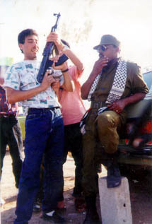

PERSONAL STORIES
"Before continuing on his way..."
Moa'taz Musa Mohammad Taha, "Ghazouz", aged 21, Rafat, Ramallah.
Right: Moa'taz (right) and a friend at a barbeque.
He was one of the best looking young men in Rafat, Ramallah. Moa'taz was respected, well-behaved and well brought-up. He always wanted his mother to wear the best and the most expensive clothes. He used to call her al-Azziza, ("the dearest").
He left school because of harassment by soldiers. One day aged 19, during the Intifada, he was on his way to school when three Israeli soldiers and an officer kidnapped him and took him to an abandoned field with lots of trees. They beat him fiercely in the abdomen and on his face until he bled and some of his teeth fell out. They then tried to hang him from one of the trees. When he started to scream for help, a woman with her daughter who were passing by heard him. He was shouting "Mother! Mother! Help me!". The passing woman answered back "Yes, son, I'm coming" and tried to get him away from the soldiers. She asked her daughter to bring him some water. The soldiers then left. He washed the blood and sand from his face, before continuing on his way, to school.
Moa'taz was arrested several times and was also injured on numerous occasions. One of these injuries was caused by live ammunition hitting him in the mouth. After being arrested several times, he developed an ulcer. He was brave and his peers looked to him as a hero and started to call each other Abu al-Moa'taz ("Father of Moa'taz"). Moa'taz's nickname was "ghazouz", which was used by the whole neighborhood.
Above: Moa'taz (center) and two friends by
the Sea of Galilee, in calmer days.
Moa'taz liked to dress well, and used to spend hours looking at himself in the mirror before he could decide what to wear. He used to eat chicken liver, but never sheep liver! He also liked pasta, preparing it on his own, and loved kufta (spiced meat) with tomato sauce, his favourite dish.
<>One day he went to a wedding party where they offered to the guests food in a European style/tradition. This got Moa'taz thinking, and he announced to the other guests that on his wedding day, people will get "the best food that has ever been offered at a wedding party!" His family, in the days after his death, offered those who were paying their respects more than sixty large trays of kufta and sixty large trays of pastry.Moa'taz had already built and furnished a house in preparation for his wedding. He dreamed of having a daughter who would be able to do housework as perfectly as his mother.
The thing that his family and his friends remember about him most was his laughing face. He always used to make people laugh. He loved children very much. Whenever he saw a child, he would kiss him or her and clean their hands and face where they were dirty from playing.
Moa'taz was honest and direct. If he had to say or give his opinion of someone, he would tell the truth, even if it was to the person's face. If he felt that the person was not a good person, he would say to him "God forgive you. You are a bad person!"
He offered to pay for all the expenses for his mother to make Haj (the pilgrimmage to Mecca). She did make it and returned with a traditional black Bedouin robe, headdress (hatta' or kuffiyeh) with an a'gal to hold the headdress in place. He wore them and went to the house of his grandfather and uncle to visit. They did not recognize him in his new clothes!
He had three sisters and five brothers and was the fourth in the family. He never used to forget any of the family occasions and special days. He loved to surprise the family and used to joke around all the time, laughing with them all.
Moa'taz used to love to listen to Abdel Haleem Hafez, the "Elvis Presley of the Arab World", and Fairuz. He used to sleep to the sound of their music on the stereo. It would play until the morning, unless his mother would turn it off before she went to bed. He liked watching Indian films, and he loved basketball and football, the latter of which he and his friends would play in the streets every day. The football used to fly into his grandmother's garden and she would come out shouting at them to stop playing by the garden. He would tell her, "It's OK, Grandma, we only do it three hundred times a year!"
Once he phoned one of his teachers at home and talked to him as if he was a famous Egyptian actor. On another occasion, he called the same teacher and talked to him as if he was an Iraqi. The next time he phoned him, he pretended to be a high level officer in the PA and told him that he was coming to his house to drink tea, a great honour in Palestinian society. He was good at impressions.
Above: Moa'taz working in a supermarket.
Moa'taz use to dream that he would one day be able to open a chain of supermarkets. If he couldn't do it at home, he wanted to move to the United States to fulfil his dream. During the last months before his death, a few of his friends came back from the United States and he began to think more and more seriously about leaving. His mother hid all of his travel documents so that he would not be able to leave.
Moments before he left home on the day of his death, Thursday 26 September 1996, his mother asked him to give her a lift to her daughter's house. She thought that this way he would not have the opportunity to participate in the clashes. Moa'taz asked her "When do you want to be there?" "At ten o'clock," she answered. "So, we've got lots of time then", he said.
He finished his tea and told his mother, "Your tea was delicious today and your breakfast was great! More delicious than any other day." After this he went to the backyard and picked a pomegranate from the tree and ate it. His little brother told him how beautiful his hair was, his mustache, his cheeks, his clothes....and asked him "How is it that you are so handsome?" "God made me like this....what can I do, brother?" responded Moa'taz grinning.
His sister said that Moa'taz liked soft-soled shoes, but no one ever knew the reason for this. On the day of his death, his mother brought him heavy soled shoes when he was about to go out. He refused to wear them. They asked him, "Why?" He answered that when he was wearing them, it was easier for him to run. Before he left the house, he stood by the window quietly for a moment, and then continuied on his way.
Left: Moa'taz in a classic post-redeployment pose with a Kalashnikov, a photo that - for him - would later turn out to be an omen.
At the demonstration, he used cloth sheets from a soldier's tent and some string that he got from a woman who was standing nearby and made a muqlay'a ("slingshot"). He showed the guys around him how they could make one, also making a few for them.
Moa'taz was with his friends, throwing stones at the soldiers, when he saw a Palestinian policeman fall dead from a gunshot wound in front of them. Moa'taz grabbed the gun of the fallen policeman and started to shoot back at the Israeli soldiers. He continued fighting until he was shot by 30mm diameter explosive bullets from an Israeli helicopter overhead. He was shot on the right side of his head, and died instantly before continuing on his way.
Back to PERSONAL STORIES or on to the NEXT STORY